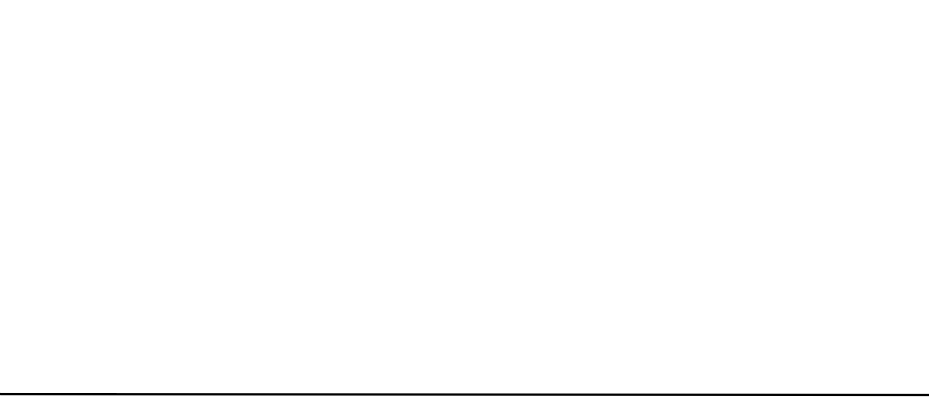

Course: Eastern Religious Traditions
Lecture #8: Religion in China -- Introduction
Outline of Early Chinese History
(Dates and entries before 841 BCE are traditional)
| Year BCE | Dynasty | Details | |
| 2852 | Culture Heroes | Fu Hsi, inventor of writing, fishing, trapping. | |
| 2737 | Shen Nung, inventor of agriculture, commerce. | ||
| 2697 | Yellow Emperor | ||
| 2357 | Sage Kings | Yao | |
| 2255 | Shun | ||
| 2205 | Hsia Dynasty | Yu, virtuous founder of dynasty | |
| 1818 | Chieh, degenerate terminator of dynasty | ||
| 1766 | Shang or Yin Dynasty | King T’ang, virtuous founder of dynasty | |
| c. 1300 | {Beginning of archeological evidence} | ||
| 1154 | Chou, degenerate terminator of dynasty | ||
| Chou Dynasty | Western Chou | King Wen, virtuous founder of dynasty | |
| 1122 | King Wu, virtuous founder of dynasty | ||
| 1115 | King Ch’eng, virtuous founder of dynasty | ||
| 878 | Duke of Chou, regent to King Ch’eng | ||
| 781 | King Li | ||
| 771 | King Yu | ||
| 722 | Eastern Chou | Spring and Autum Period (722-481) | |
| 551 | Period of the “hundred philosophers” (551-233 BCE): Confucius, Mo Tzu, Lao Tzu, Mencius, Chuang Tzu, Hui Shih, Shang Yang, Kung-sun Lung, Hsun Tzu, Han Fei Tzu. | ||
| 403 | Warring States period (403-221 BCE) | ||
| 4th to 3rd Century | Extensive Wall-building and waterworks by Ch’in and other states | ||
| 249 | Lu Pu-wei, prime minister of Ch’in | ||
| 221 | Ch’in Dynasty (221-207 BCE) | The First Emperor; Li Ssu, prime minister | |
| 214 | The Great Wall Completed | ||

The religious and philosophical traditions are dominated by a desire to achieve and maintain harmony with the cosmos. Thus, there is always a concern for what is proper.
in the earliest periods, harmony was sought through ritual means in sacrifice and divination.
Confucius and his followers saw that harmony rested on the character of human relationships.
The Taoists saw that emphasis on human relationships gave rise to competition and conflict so one must find harmony at the deepest level. Co forming one’s life to cosmic principle was the only way to harmony between man and Nature and man and man.
Buddhism, imported from India, said man could achieve the highest harmony by cutting through delusions of the ego and have no attachments to the world.
This quest for harmony is still proceeding in China, though now on the political level. It is still a problem to unite the Chinese people with a common sense of destiny and meaning.
Religion has been a strong force in China as Chinese theories of government and morality drew upon religious sources for their authority.
The Chinese generally have not considered religion as something apart from life. They would not share the sentiment that it is the whole duty of Iman to glorify God, making religion an end in itself. The instrumental nature of Chinese religion has deep roots in ancient fertility rites designed to stimulate food production and persevere the community.
Religion for the Chinese is primarily a social function for the good of society as a whole.
Specific, institutional forms of religion were constantly controlled by the government because they were potentially independent centers of faith and allegiance which could threaten the traditional order.
The basic cleavage in the Chinese religious world has not been between the clergy and the laity, but between the scholar-bureaucrat (Confucian elite) and the generally uneducated, illiterate masses of people. These elite were rationalistic and opposed superstition, however, they knew religion to be good for authority, political and social so didn’t oppose it.
China did not develop a class of religious personnel who tended primarily religious matters, the scholar-bureaucrats ensured cosmic and social order and harmony thru teaching moral norms and performing rituals. In no case did they present for the individual a way of salvation as an alternative to life in this world and society.
Confucianism, Taoism, and Buddhism have so fused that the average person may not be aware of the source of his beliefs or practices. Confucianism gave guidance for the moral life. Taoism provided techniques of magic to secure longevity, to deal with spirits, and to gain benefits from alchemy and Buddhism came to be related primarily to the afterlife in the Pure Land of Heaven.
Ask any number of Chinese what their religion is and the answer of the majority will be that they have no particular religion, or The Ta Cha - world church, or that since all religions benefit man in one way or another, they are equally good.
Early China (before Confucius)
The earliest historic dynasty is the Shang (1500-1100 BCE) They had developed advanced techniques of bronze-casting, sericulture, weaving, and most significant-writing. They finally fell before the Chou tribes of Northwest China about 1100 B.C.
The leaders of the Shang dynasty worshiped ad deity named Shang-ti which means "Lord on High" supposed to be the great ancestor of the Shang so they had right to rule since the god was an ancestor
The Chou era divides into three periods. 1100-722 BCE the Chou were in command. From 722 -481 is the Spring and Autumn period when many petty rulers tried to take over as the royal house declined. The final period, and the one of most the great thinkers, is called the "age of warring states" (481-221 B.C). Finally in 221 the Ch’in dynasty took over for a short period (221-206 B.C) and persecuted scholars, destroyed classical texts. The great Han dynasty took over in 206 and survived until 220 A.D. (CE) During this time Confucianism became the orthodox ideology.
When the Chou took over, they renamed the supreme being T’ien which means heaven. The reason the Chou could defeat Shang ti was they had received the "mandate of Heaven" to rule. They believed the Shang had lost the right to rule because they had lost their virtue thus the Chou were given the right to rule.
The Chinese believed that human beings were so closely related to heaven that each affects the other. As long as a ruler is virtuous, he will have the mandate of T'ien to rule.
The Emperor is known as T'ien-tzu or son of heaven. He is the only one who can sacrifice to T'ien. Rule is by virtue, not heredity. They felt they were the civilized ones (the middle of the world) and all other peoples were barbarians.
The Emperor practiced divination (the I Ching, oracle bones, and/or tortoise shells) astronomy and astrology to see what heavens will was on each thing he did.
The Tao (path or way) is what one must be in touch with to know the will of T'ien. This is the essence, structure of things. Divination is used to discern the will of T'ien.
The Yin and Yang everything in the world run on positive and negative forces. They have to be together -- can't be separated.
Yin is dark, cold, female, the moon
o Yang is warm, light, male, the sun
o Each contains a small part of the other.
o Must stay in harmony with heaven or the dynasty will fall -- mandate of heaven to rule end.
By the time of the Ch'in dynasty T'ien had come to mean nature rather than a personal deity.
Highest Reality: T’ien
Ultimate Concern: harmony with nature.
Human predicament: For Confucius and all other was why is there chaos in the world. How do we stay in harmony with nature.
Solution: Tao, thru divination find out what heaven is up to.
Five Chinese Classics
The book of history (9th cent B.C.) legendary history of China added to till 625 B.C.
Book of odes
I Ching- Book of changes. used for divination-64 hexagrams composed of yin and yang lines. with organic view of nature as harmonious process one can find out one destiny. One throws coins or yarrow sticks which show what one is to do to be in harmony with nature.
The book of rites or ceremonies. concerns ancestor worship, music, dancing and the state sacrifices.
The Spring and Autumn annals considered to be one of the first accurate historical texts of China. attributed to Confucius (K'ung Fu-tzu, 551-479 B.C.)
During the warring states period the magical and pragmatic traditional religion lacked sufficient moral and spiritual depth to contribute to social harmony. Thus, many private teachers and statesmen arose to offer their services to rulers. Over a hundred schools arose at this time but lasted. Confucius is the only one that lasted.
Confucius never wrote anything the Analects is attributed to him.
He was from a poor family but given responsibility and did well. He was known for his competence and moral character. He suffered from intrigue and slander but didn't alter his ways, being convinced he had a mission which none could thwart because it was supported by heaven. He spoke little of heaven but believed he had a mandate to clean up the social order. His concern was human relationships,
A cult of Confucius did develop and became the official one of the state under the Han dynasty.
Confucius" philosophy of human relationships
The Analects is the most reliable source of his teaching.
The audience assumed was the aspiring scholar-bureaucrats, so it is practical in application. Tho dealing with ruler and employees, it applies to all people since power is always an issue. It assumes that in every form of human relationship there is a leader and a follower.
The major issue in the Analects is the formation of the appropriate moral character enabling the individual to wield power without force.
The achievement of ideal human existence requires the harmonization of the inner and outer aspects of man's life. Heaven guarantees morality by responding to human actions with reward or punishment.
Jen
The most important for Confucius. Jen Means humanness, human-heartedness, love, benevolence or goodness. In essence Jen is what one does when he is most truly human and implies that humanity is a task and an achievement.
It has two dimensions. the level of expression in particular actions and attitudes and a deeper dimension of perfection. One must begin with lower things in order to arrive at the higher.
When Jan Jung inquired about the nature of goodness, Confucius said:
Behave when away from home as though you were in the presence of an important guest. Deal with the common people as though you were officiating at an important sacrifice. Do not do to others what you would not like yourself. (Analects XII.2)
Everyone should compete in the pursuit of Jen. It comes from within the man and cannot be gotten from others.
The pursuit of Jen is not easy. It must be the primary goal of life, and is the source of true happiness which enables one to bear up in adversity. It is an end in itself. Finally, Jen is the basis for the love of men and it is the only means to make power durable after one's wisdom has brought him into power.
Five key relationships in society
Between ruler and subject. chung. (loyalty) as its appropriate to be loyal to the ruler.
Father and son. hsiao (filial piety) includes veneration of dead ancestors. the ideal is that one should spend 3 years in mourning when the father dies.
Older son to younger son. younger son should respect older son.
Husband and wife. mutual regard. Originally meant wife obey husband. wife must be obedient to the older son if loses husband and to mother-in-law.
Friend to friend. shu (reciprocity) the idea of shu is that of identification enabling persons to know the appropriate behavior for dealing with others thru considering what they themselves need to live happily and securely.
Confucius rejects action based on calculation of profit for oneself. The foundation for true ethical action comes from contemplating what benefits all, not merely oneself.
Confucius was attempting to replace the traditional tribal morality with an inwardly motivated morality based on one's awareness of his common humanity with others.
Chung (loyalty) represents the development of one's mind, while shu is the extension of that mind to others.
Hsueh (learning, study) or wisdom is an indispensable quality or attitude in the cultivation of virtue. It was only thru learning that virtues could be kept in proper harmony without excess or distortion. For Confucius, the purpose of learning was to build moral character and not merely to instruct in skill or impart information. Learning is for change.
He taught without discriminating according to class or economic ability
Li is a concept covering the whole range of human activities from the performance of religious rituals (mourning, dress, manners, etc.) withing the family and among associates.
Came to represent the rationalized social order and conventions which aid in avoiding conflicts. Confucius claimed that the people would respond to the goodness(Jen) of the ruler if he would conform to li.
Chun-tzu came in the analects to be known as the true gentleman or superior person as a result of his moral development. He had numerous qualities including especially that he is committed to the good as an end in itself and to right before all else. He rejects personal profit, is honest, demands more of himself than others. In short, he combines inner quality and spirit with outer form.
Te moral charisma generated by a person function as he is designed to function. Essence of leadership depends on character, in contrast to force. Te is that power which causes people to do things on behalf of others thru their own volition and desire.
Wen was its correlate and is the exterior quality of culture, bearing, poise, and carriage expressed in the polite arts and ritual. Wen refers concretely to the arts of peace such as music and dancing and literature as opposed to war.
Confucius believed that the true way to conquer a people the Tao of Confucius was represented by the chun-tzu as the highest ideal of human endeavor. He was aware of conflicting views.
T’ien was the ultimate basis for his philosophy. According to Confucius, Heaven was the source of moral power which guaranteed virtue. Hence, the Tao set forth by Confucius was ultimately the will of Heaven.
Confucius attributes all events outside the control of man to the will of Heaven.
Confucius contribution to the history of moral and social thought lies in his articulation of a consistent system of inner values and qualities and correlation of external actions which must be the basis for effective government.
Interpreters of Confucius: Mencius, and Hsun-tzu.
In the period following Confucius political conflicts multiplied and intensified. Social thought swung between two schools, that of despair and rejection of social conventions (every man for himself) of Yang-Chu, to a more utopian idealism of universal love that Mo-ti proposed.
Mo-ti advocated a utilitarian, utopian principle of universal of indiscriminate love as the ultimate solution to human problems. It was an extension of the Confucian principles of Jen and shu applied without discrimination to all people. He espoused the greatest good for the greatest number as the objective of government.
He rejected aggressive warfare but had a reputation for defensive warfare and fortifications. He preached obedience and submission to superiors and strong central government.
The importance of Mo-ti's philosophy lies in his recognition that society must inculcate into people a broad concern for others beyond the limits of self and kin if it is to have stability.
Mencius
Sometimes thought of as the “St. Paul of Confucianism.” Made it his mission to refute Mo-ti and Yang-chu.
Most of what we think of as what Confucius said is usually Mencius. His arguments in defense of Confucianism are probably the basic reason for its eventual supremacy over other schools and its lasting influence.
The starting point of Mencius thought was the Confucian assumption that to be a human being means to be a social being and that the principles of social behavior are rooted in human nature. Consequently, all theories are false which conflict with man's nature.
That men lack goodness is simply because they have not permitted their capacities to develop. Mencius says.
"Without compassion one would not be a human being. The sense of compassion marks the beginning of becoming man-at-his-best. The sense of shame marks the beginning of propriety. Submissiveness marks the beginning of a sense of ceremony. The sense of right and wrong is the beginning of wisdom. Every human being possesses these four beginnings just as he possesses four limbs.” (Mencius II.A.6)
As a result of this high estimation of man, he interpreted the Mandate of Heaven as the basis for revolution against despotic kings, making government rest on the will of the people.
He was criticized from several quarters concerning his view of the basic goodness of man. Kao-tzu, a non-Confucian maintained the moral neutrality of human nature and asserted that external circumstances determined what one would do.
Hsun-tzu (313-238 BCE) declared that man's basic nature was evil, while such goodness as he possessed was acquired. Man is fundamentally selfish and egocentric, possessing violent emotions of envy and hatred. Thus the sages had developed rituals and regulations in order to train (socialize) human behavior.
The goodness of man was the result of restraining human nature just as "a warped piece of wood must wait until it has been laid against the straightening board, steamed and forced into shape before it can become straight.
Hsun-tzu, contrary to Mo-ti, regarded music, ritual, and ceremonies as indispensable in the cultivation and refinement of human emotion.
His perspective on religious ritual was rationalistic, distinguishing between the true understanding of the sage and gentleman and the naive belief of the common man.
His rationalistic, anti-superstitious tendency was also expressed in his concept of heaven which he regarded as an amoral, naturalistic process.
Hsun-tzu possessed a confidence in human intellect, believing that man could control his destiny through effort and reason. however, he was gripped by pessimism concerning man's moral capacities.
In regard to government usually Mencius is referred to and is the ideal, but in actual practice it is Hsun-tzu that is followed.
There are four books one must read to get ahead in the civil Service:
Analects, Mencius, The Great Learning, and The Doctrine of the Mean.
About the 1st Century with the Han Dynasty a restraint is placed on feelings and the idea that emotions are bad and intellect good is developed based on Hsun-tzu's views. This has followed through to the present (today).
Thus, hiring mourners is not to impress the spirits but to show I can't mourn enough for my dead father (filial piety).
Confucianism, under the Han rulers attained the position of the official ideology of the state. It never retreated from this position down to modern times, though its future under the communist's remains in doubt.
There was a long period of neglect but by the ninth century CE the intellectual class was thoroughly imbued with Confucian ideals. The result was criticism of the religious practices of Taoism and Buddhism.
Neo-Confucianism emerged in the 9th Century CE with a synthesis of all major thought streams which had developed in China to that time. It was more mystically oriented as it included Taoist and Buddhist belief. However, it remained basically this worldly though two schools emerged, the "Reason school" and the "mind school.' During the Ch’ing period (1644-1911 CE) there were so many restrictions that there was a reaction against neo-Confucianism with attempts to purge out Taoist and Buddhist thought. The major issue was the determination of what texts were authentic texts of Confucianism. This authoritarianism made the system rigid. This limitation made the adaptation of Confucianism to modern challenges extremely difficult and contributed to the intellectual crisis in the confrontation with the west.